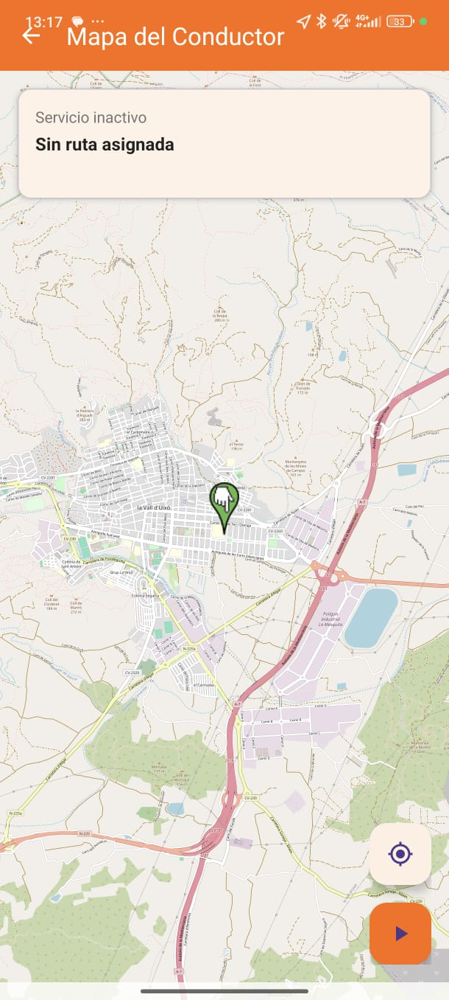
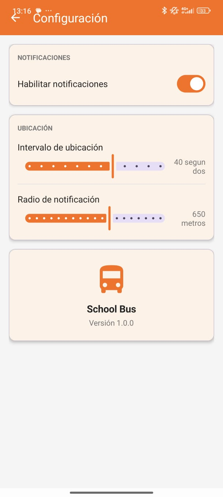
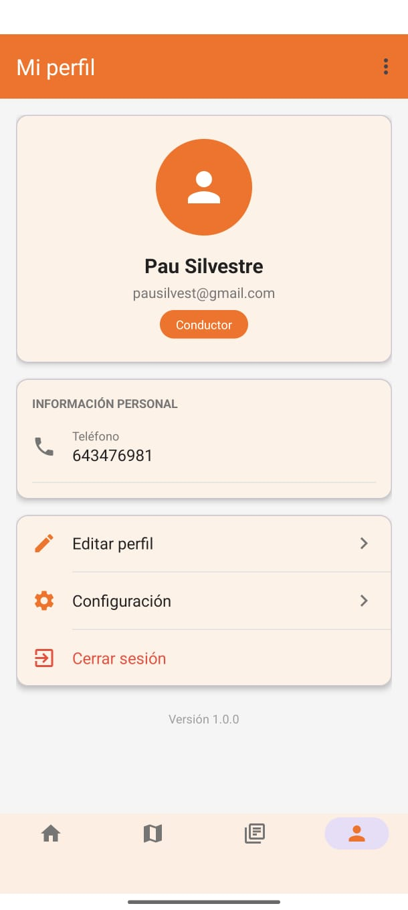
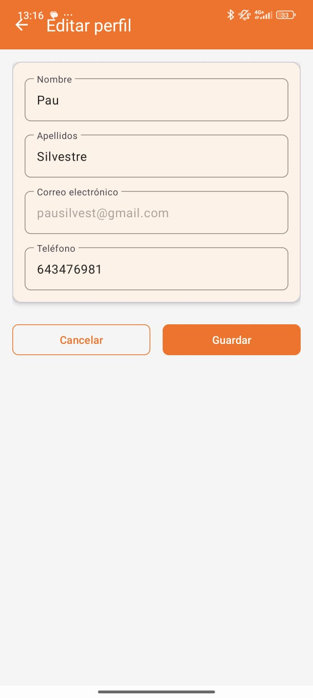
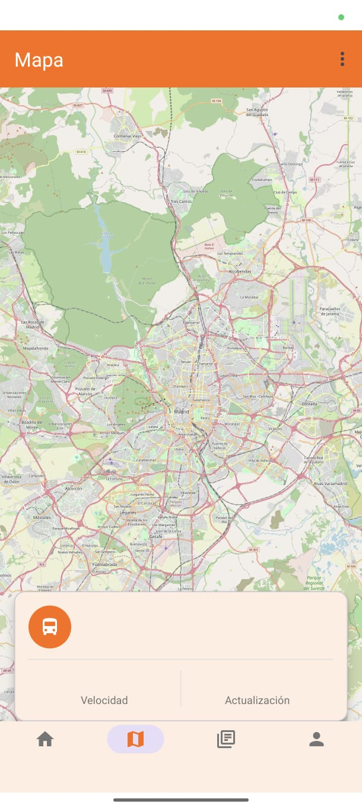
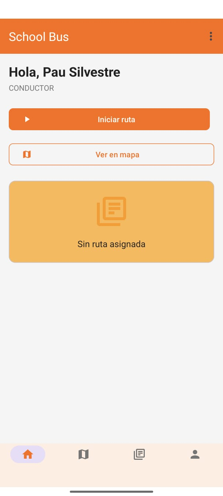
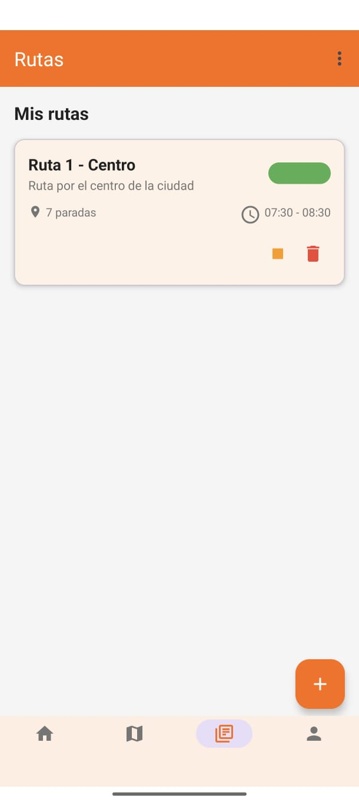

Índice
- Resumen ejecutivo
- Introducción
- Justificación del proyecto
- Contexto y problemática detectada
- Objetivos del proyecto
- Alcance del proyecto
- Análisis de requisitos
- Perfiles de usuario y casos de uso
- Diseño conceptual y experiencia de usuario
- Mockups, wireframes y propuesta visual
- Arquitectura técnica del sistema
- Tecnologías empleadas
- Desarrollo implementado en la aplicación Android
- Gestión de usuarios y autenticación
- Persistencia de datos y diseño de base de datos
- Navegación, pantallas y funcionalidades desarrolladas
- Pruebas realizadas y validación
- Instalación, ejecución y puesta en marcha
- Planificación del proyecto
- Análisis de riesgos
- Presupuesto y recursos
- Estado actual del proyecto
- Limitaciones detectadas
- Propuestas de mejora y trabajo futuro
- Conclusiones
- Anexos visuales
1. Resumen ejecutivo
School Bus App es una aplicación móvil orientada al seguimiento, organización y gestión del transporte escolar. Su finalidad es centralizar la información relativa a rutas, usuarios, avisos y localización del autobús, mejorando así la comunicación entre familias, estudiantes, conductores y responsables del servicio.
El proyecto ha sido desarrollado como trabajo final del ciclo formativo 2DAM durante el curso académico 2025/2026. A lo largo del repositorio se aprecia un trabajo estructurado en distintas capas: análisis previo, propuesta funcional, diseño visual, prototipado, planificación, modelado de datos y una implementación Android inicial pero significativa.
Problema detectado
La gestión del transporte escolar suele apoyarse en canales informales, dispersos y poco trazables.
Solución propuesta
Una aplicación Android con autenticación, información centralizada, perfil de usuario, pantallas específicas y evolución hacia geolocalización real.
Estado del proyecto
Existe una base funcional implementada con SQLite, estructura Android definida y preparación para Firebase.
Valor académico
Combina análisis, arquitectura, desarrollo móvil, modelado de datos, diseño visual y documentación técnica.

2. Introducción
El presente documento constituye la memoria descriptiva del proyecto School Bus App, una aplicación orientada al seguimiento y gestión del transporte escolar mediante dispositivos móviles Android. El objetivo principal de la solución es ofrecer una herramienta que permita mejorar la organización del servicio, la comunicación entre los distintos usuarios implicados y la consulta centralizada de información relacionada con rutas, paradas, usuarios, avisos y seguimiento del autobús.
El proyecto se plantea como una propuesta realista, escalable y alineada con necesidades del entorno educativo actual. La aplicación combina una parte funcional ya implementada en Android Studio con documentación técnica, diseño visual previo, prototipos de interfaz y una propuesta sólida de base de datos orientada a una versión futura más completa.
A lo largo del repositorio se observa una evolución del proyecto desde la fase de análisis y diseño hasta una fase de implementación práctica. Se incluyen documentos de planificación, análisis de riesgos, presupuesto, diagramas, mockups visuales, wireframes interactivos y una aplicación Android estructurada en Java con persistencia local e integración preparada con Firebase.
3. Justificación del proyecto
La gestión del transporte escolar suele depender, en muchos contextos, de canales poco estructurados como llamadas telefónicas, mensajería instantánea o comunicaciones informales entre familias y responsables del servicio. Esta forma de trabajo provoca ineficiencias, falta de trazabilidad, desinformación y dificultades para responder con rapidez ante retrasos, cambios de ruta o incidencias.
En este contexto, el proyecto School Bus App surge como respuesta a una necesidad real: disponer de una plataforma móvil desde la que estudiantes, familias y conductores puedan consultar información relevante del servicio de transporte escolar de forma rápida, centralizada y accesible.
- El teléfono móvil es el dispositivo de consulta más inmediato para familias y alumnado.
- Android permite trabajar con componentes nativos, notificaciones, almacenamiento local, autenticación y servicios de localización.
- La app puede evolucionar hacia una solución más robusta conectada a servicios en la nube.
- El proyecto permite aplicar competencias reales del ciclo 2DAM de forma integrada.
4. Contexto y problemática detectada
El transporte escolar implica coordinación de rutas, horarios, paradas, listas de estudiantes, vehículos, conductores, incidencias y comunicaciones con familias. Cuando esta gestión se realiza de forma fragmentada, aparecen problemas de centralización, retraso informativo, dependencia manual y escasa trazabilidad.
- Falta de información centralizada.
- Dificultad para comunicar incidencias.
- Escasa trazabilidad de los eventos del sistema.
- Dependencia de llamadas o mensajes individuales.
- Inseguridad percibida por las familias ante la falta de visibilidad del trayecto.
5. Objetivos del proyecto
5.1 Objetivo general
Desarrollar una aplicación móvil Android que permita mejorar la organización y el seguimiento del transporte escolar, centralizando la información relevante del servicio y facilitando la interacción entre usuarios.
5.2 Objetivos específicos
- Implementar una app funcional con interfaz móvil adaptada al contexto del transporte escolar.
- Permitir el registro e inicio de sesión de usuarios.
- Gestionar perfiles básicos de usuario con almacenamiento de sesión.
- Preparar la aplicación para una integración real con Firebase Authentication y Firebase Realtime Database.
- Incorporar persistencia local mediante SQLite como solución funcional base.
- Diseñar una estructura de pantallas clara, intuitiva y escalable.
- Definir un modelo de datos robusto y ampliable.
6. Alcance del proyecto
El alcance del proyecto se plantea desde una lógica de MVP con posibilidad de ampliación progresiva.
Ya contemplado o implementado
- Registro e inicio de sesión.
- Sesión activa.
- Perfil de usuario.
- Dashboard y mapa.
- Notificaciones y lista de estudiantes.
- Persistencia local con SQLite.
Planteado como evolución
- Seguimiento en tiempo real.
- Gestión avanzada de rutas y paradas.
- Relación entre padres y estudiantes.
- Registro de viajes e incidencias.
- Notificaciones automáticas.
- Reserva futura de plazas.
7. Análisis de requisitos
7.1 Requisitos funcionales
- Registrar usuarios.
- Permitir inicio de sesión mediante email y contraseña.
- Mantener sesión activa.
- Mostrar información de perfil.
- Contemplar distintos roles de usuario.
- Consultar información del autobús y de la ruta.
- Gestionar avisos y notificaciones.
7.2 Requisitos no funcionales
- Ejecución sobre Android.
- Interfaz clara e intuitiva.
- Navegación sencilla para usuarios no técnicos.
- Escalabilidad de la arquitectura.
- Persistencia local y proyección remota.
8. Perfiles de usuario y casos de uso
El diseño del sistema contempla claramente distintos perfiles: conductor, estudiante, padres o tutores, y administrador. Aunque no todos los roles están desarrollados al mismo nivel, su definición ayuda a estructurar el crecimiento del producto.
- Conductor: seguimiento de ruta, comunicación de incidencias, consulta de lista de estudiantes.
- Estudiante: rol vinculado al servicio de transporte y a la información de ruta.
- Padres o tutores: consulta del estado del autobús, recepción de avisos y seguimiento del estudiante asociado.
- Administrador: gestión de usuarios, rutas, vehículos, notificaciones e incidencias.
9. Diseño conceptual y experiencia de usuario
Uno de los puntos fuertes del repositorio es la presencia de una línea de diseño bien trabajada. No se trata únicamente de una implementación técnica, sino de una propuesta que busca representar con claridad cómo sería el producto final desde el punto de vista del usuario.
- Pantallas limpias y orientadas a tareas concretas.
- Distribución visual pensada para móvil.
- Uso de iconografía reconocible.
- Tarjetas, navegación inferior, filtros, avisos y vista de mapa.
- Representación gráfica de rutas, estados y tiempos estimados.


10. Mockups, wireframes y propuesta visual
El repositorio incorpora recursos visuales que enriquecen notablemente la documentación del proyecto. Estos materiales sirven para comunicar la idea de producto, validar pantallas y justificar decisiones de diseño.
La carpeta mokup/ contiene siete imágenes que ayudan a reforzar la identidad visual, la disposición de elementos en pantalla, la intención de navegación,
la presentación del mapa y la visualización de listados. Su valor dentro de la memoria es especialmente importante porque permiten comprender el producto sin necesidad de ejecutar la aplicación.




Además, la carpeta wireframe/ contiene un prototipo interactivo en HTML, CSS y JavaScript que simula el funcionamiento de la app.
Incluye cabecera con notificaciones, panel de avisos, buscador, filtros, lista de autobuses, vista de mapa, panel informativo y navegación inferior.
11. Arquitectura técnica del sistema
La parte implementada del proyecto Android se encuentra dentro del directorio schoolbus/. Se trata de una aplicación estructurada en distintos paquetes Java:
activities/adapters/database/firebase/models/session/
Esta distribución permite separar responsabilidades entre interfaz, adaptadores, acceso a datos, autenticación remota, modelos de dominio y gestión de sesión.
12. Tecnologías empleadas
- Android Studio como entorno principal.
- Java para lógica y control de pantallas.
- XML para interfaces Android.
- SQLite mediante
SQLiteOpenHelperpara persistencia local. - Firebase Authentication y Firebase Realtime Database para autenticación y persistencia remota.
- HTML, CSS y JavaScript para el wireframe interactivo.
- GitHub como repositorio y control de versiones.
13. Desarrollo implementado en la aplicación Android
La aplicación Android contiene una base funcional ya iniciada y suficientemente coherente como para demostrar el avance del proyecto.
13.1 Estructura de actividades
- About.java
- BusMap.java
- BusRoute.java
- DashboardActivity.java
- Login.java
- MapaConductorActivity.java
- NotificationActivity.java
- Profile.java
- Register.java
- Settings.java
- StudentList.java
13.2 Modelos y adaptadores
Se identifican modelos como Bus, Notification, Route, Stop, Student y User,
además de adaptadores para notificaciones y estudiantes. Esto refleja una base adecuada para listas dinámicas y representación del dominio funcional.
14. Gestión de usuarios y autenticación
Una de las partes más claras del desarrollo actual es la autenticación de usuarios. El proyecto implementa tanto registro como inicio de sesión, utilizando Firebase cuando está disponible y recurriendo a SQLite como mecanismo alternativo local.
- Register.java registra usuario y guarda perfil.
- Login.java valida credenciales y guarda sesión.
- Profile.java muestra datos del usuario desde sesión, SQLite o Firebase.
- SessionManager conserva datos básicos en
SharedPreferences.
15. Persistencia de datos y diseño de base de datos
La persistencia del proyecto aparece en dos niveles claramente diferenciados: una base funcional SQLite para la app actual y un modelo relacional más completo definido en data.sql.
La implementación local incluye tablas para usuarios, estudiantes, autobuses, paradas y notificaciones. Por su parte, el modelo extendido contempla usuarios, estudiantes, padres, conductores, vehículos, rutas, paradas, asignaciones, viajes, asistencia, ubicaciones en tiempo real, incidencias y mantenimientos.

16. Navegación, pantallas y funcionalidades desarrolladas
Los recursos de layout/ muestran que la app cuenta con múltiples vistas diseñadas: login, registro, dashboard, mapa, conductor,
notificaciones, perfil, ajustes y lista de estudiantes, además de elementos reutilizables para listas.
- Pantalla de inicio de sesión.
- Pantalla de registro.
- Pantalla principal o dashboard.
- Pantalla de mapa.
- Pantalla de conductor.
- Pantalla de notificaciones.
- Pantalla de perfil.
- Pantalla de lista de estudiantes.
17. Pruebas realizadas y validación
Aunque el repositorio no incluye un plan de testing automatizado completo, sí permite identificar una validación funcional básica del sistema a través del desarrollo implementado y del wireframe interactivo.
- Comprobación de campos obligatorios en login y registro.
- Validación de longitud mínima de contraseña.
- Gestión de errores de autenticación en Firebase.
- Guardado y recuperación de sesión local.
- Validación visual de la navegación mediante el wireframe.
18. Instalación, ejecución y puesta en marcha
- Clonar o descargar el repositorio.
- Abrir la carpeta
schoolbus/en Android Studio. - Sincronizar dependencias Gradle.
- Ejecutar la aplicación en emulador o dispositivo físico.
- Configurar Firebase si se desea utilizar autenticación remota.
La app dispone de fallback local, lo que facilita las pruebas incluso cuando Firebase no está totalmente configurado.
19. Planificación del proyecto
El repositorio incluye una propuesta temporal y un diagrama de Gantt. La planificación se organiza en fases de análisis, diseño, desarrollo, integración, pruebas y documentación final.

20. Análisis de riesgos
El análisis de riesgos identifica problemas relevantes como retrasos por falta de experiencia con Google Maps SDK, dificultades de integración con Firebase, compatibilidad entre dispositivos Android, falta de tiempo y dependencia de servicios externos.
La estrategia de mitigación se apoya en la priorización del MVP, el uso de alternativas locales y la progresión por fases de complejidad.
21. Presupuesto y recursos
Recursos materiales
0 €
Recursos software y tecnológicos
0 €
Recursos humanos
100 €
Total estimado
100 €
Aunque se trata de un proyecto académico, esta estimación permite reflejar la viabilidad económica de la propuesta y el valor del tiempo invertido.
22. Estado actual del proyecto
El proyecto presenta un estado de avance significativo: existe una base funcional Android, documentación sólida, diseño visual trabajado, wireframe interactivo, persistencia local, integración preparada con Firebase y un modelo de base de datos con proyección futura.
- Idea y alcance definidos.
- Riesgos, presupuesto y planificación documentados.
- Mockups, wireframe y diagramas integrados.
- Registro, login y perfil ya implementados.
- Base lista para nuevas ampliaciones.
23. Limitaciones detectadas
- La persistencia local es más reducida que el modelo global propuesto.
- Algunas actividades parecen estar todavía en fase inicial.
- No todas las pantallas están completamente integradas en flujo final.
- La geolocalización real todavía está más representada a nivel conceptual que funcional.
- La gestión completa de roles sigue siendo parcial.
24. Propuestas de mejora y trabajo futuro
- Integrar Google Maps SDK de forma completa en la app nativa.
- Sincronizar rutas, paradas y ubicaciones en tiempo real con Firebase.
- Implementar roles diferenciados con permisos específicos.
- Añadir panel de administración para responsables del servicio.
- Incorporar notificaciones push reales.
- Registrar asistencia de estudiantes al subir o bajar del autobús.
- Conectar estudiantes con rutas y paradas concretas.
- Integrar incidencias y mantenimientos según el modelo SQL propuesto.
25. Conclusiones
El proyecto School Bus App constituye una propuesta sólida, realista y bien fundamentada para digitalizar parte de la gestión del transporte escolar. A nivel académico, destaca por combinar análisis, planificación, diseño visual, modelado de datos e implementación práctica en Android.
No se trata solo de una idea teórica, sino de un proyecto que ya dispone de una propuesta claramente argumentada, una arquitectura técnica en marcha, un conjunto de pantallas definidas, autenticación funcional, persistencia local, preparación para backend remoto y abundante documentación visual y textual.
En conjunto, la memoria refleja tanto el estado actual del proyecto como su potencial de crecimiento, justificando plenamente su valor como proyecto final de 2DAM.
26. Anexos visuales

Los recursos visuales incluidos en el repositorio permiten reforzar la presentación de la app y consolidan el valor documental del proyecto. En la exportación a PDF, esta memoria HTML está diseñada para conservar una presentación limpia, formal y adecuada para revisión académica.